1. 二维红外光谱的起源与发展
在分子世界中，化学键并非静止不动的“连杆”，而像无数微小的“弹簧”，不断地伸缩、弯曲和摆动。这些振动不仅决定分子的结构稳定性，也影响着能量在分子内部和分子之间的传递方式。红外光谱是研究分子结构最常用的工具之一。它通过测量分子中化学键的振动频率，帮助我们判断键的种类和分子的局部环境。在一维红外光谱（FTIR）中，每一个吸收峰对应一种振动模式，峰的位置和形状反映了化学键的强弱与分布[1]。借助这些信息，化学家能够像阅读“指纹”一样识别不同的分子。然而，一维光谱只能记录分子在某一时刻的平均响应，无法揭示不同振动模式之间的相互关系。例如，在蛋白质折叠过程中，不同肽段的振动协同变化，或在溶液中，氢键不断形成与断裂，这些动态过程在传统光谱中都被“平均化”了，难以直接观察。
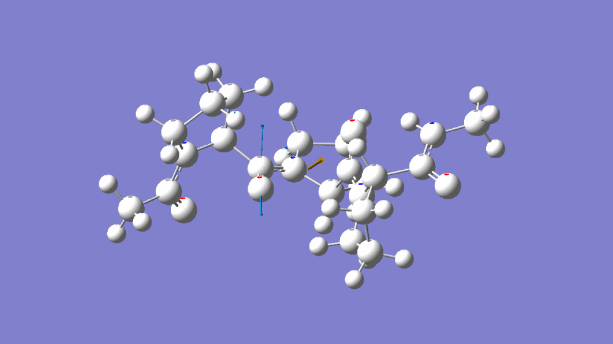
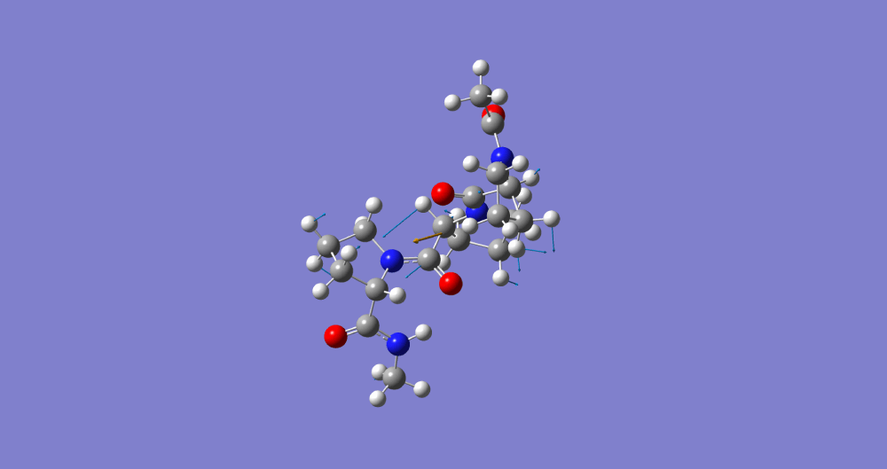
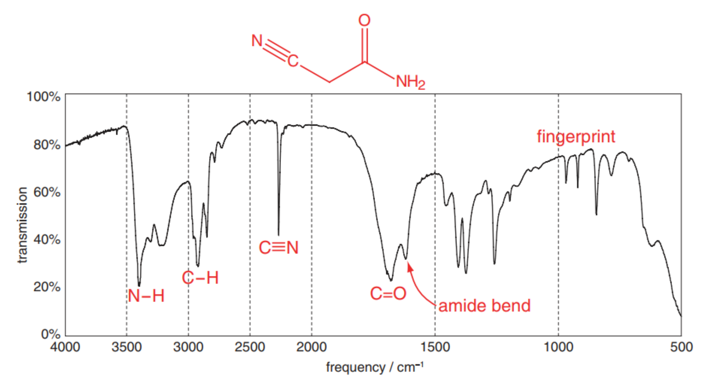
图1-1（A）C=O伸缩振动分子模拟 （B）C≡N伸缩振动分子模拟 （C）C=O伸缩振动傅里叶红外光谱 和 C≡N伸缩振动傅里叶红外光谱
二维红外光谱（Two-Dimensional Infrared Spectroscopy, 2DIR）正是在这样的需求中诞生的。它在实验上结合时间分辨与频率分辨的概念，通过超快激光脉冲在两个频率维度上同时探测分子的响应，从而揭示不同振动模式之间的耦合与能量转移关系[2]。其思想最初来源于二维核磁共振（2D NMR），2D NMR通过在两个频率维度上分析信号，使科学家能够看清原子核之间的相互作用，从而揭示蛋白质等复杂分子的三维结构。同样地，2DIR从“一维”到“二维”的发展，意味着我们不再只看到分子的单个振动，而能看到振动之间的联系——它们如何协同、如何转移能量、又如何随着时间演化。
随着超快激光技术的成熟，20世纪90年代，双色红外泵浦-探测技术率先突破，为二维红外光谱的理论构想搭建了实验基础；2000年，科学家终于完成首次真正意义上的二维红外实验，成功拍出第一帧分子振动的“动态图像”，尽管当时谱图的频率分辨率仍有不足；直至2003年，可生成真实吸收谱图的二维红外技术正式问世，为分子动力学研究打开了新的窗口。
2. 二维红外光谱的工作原理
2.1 泵浦-探测机制
在典型的2DIR实验中，样品受到一系列时间间隔可控的超快红外脉冲作用。泵浦光脉冲首先选择性激发分子中特定的振动模式，使其从基态跃迁至激发态；随后，探测光脉冲在精确控制的时间延迟下测量分子在激发态下的响应，包括振动模式之间的耦合、能量转移以及与周围环境的相互作用。
泵浦-探测（Pump-Probe）模式是最常用的2DIR实验方式之一，实验使用两个相互独立但相干的泵浦脉冲与一个探测脉冲记录样品响应并解析分子动力学过程。具体而言：第一个泵浦脉冲选择性激发目标振动，第二个泵浦脉冲在时间延迟t1后到达，进一步调制分子相干与耦合状态；此后，探测脉冲在与泵浦对之间的时间延迟t2作用于样品，记录分子从激发态的演化与跃迁过程。该三脉冲方案能够捕捉瞬态状态，并揭示振动模式间的能量转移与耦合信息。
· 泵浦脉冲选择性激发特定的振动模式，使分子从基态跃迁至激发态；
· 探测脉冲在不同时间延迟下记录分子的相干响应，从而获得振动模式间的耦合信息。
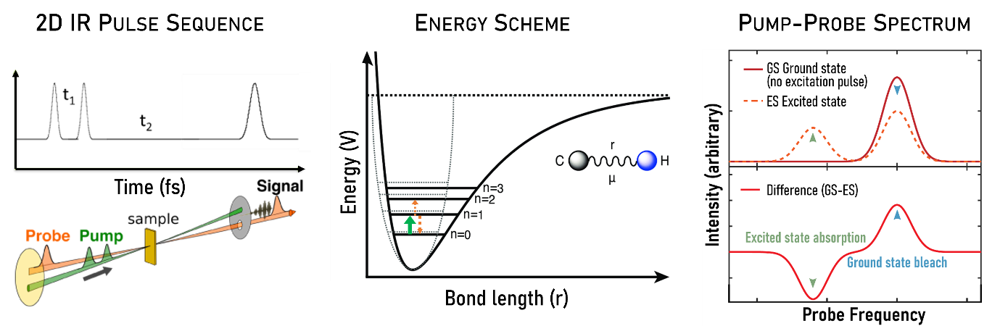
图2-1 2DIR的基本原理
2.2 二维红外的谱图特征与解析
实验结果通常以二维等高线图或伪彩色图形式呈现（图2-2）：横轴表示激发频率，纵轴表示探测频率，信号强度通过伪彩色或等高线显示。在2DIR谱图中：

· 对角峰（Diagonal Peaks） 对应分子自身振动模式，与一维红外吸收峰一致；
· 交叉峰（Cross Peaks） 是二维红外特有信号，交叉峰的出现与强度可以揭示化学键之间的空间关联，例如两个振动模 式是否共享部分原子，或通过氢键、范德华力等作用连接。
图2-2 二维红外光谱中的交叉峰的示意图：
当两个振动模式存在相互作用时，交叉峰
会在二维光谱中显现，峰位置和强度可以
揭示分子内部不同振动模式之间的耦合程
度
3. 二维红外光谱的优势与应用
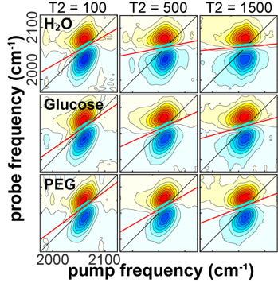
图3-1 在不同等待时间延迟下，水、葡萄糖和PEG 1500溶液中C≡N伸缩振动模式的二维红外光谱示例[3]
3.1 二维红外光谱的优势
2DIR的核心优势体现在三个方面：
（1）揭示振动模式的耦合关系：交叉峰的存在与特征，能够定量反映不同振动模式之间的耦合强度，这种耦合可能源于原子的共享、化学键的共轭效应，或是分子间的化学相互作用，为理解分子的空间结构与电子效应提供了深层依据。
（2）捕捉超快分子动力学过程：凭借飞秒至皮秒级的时间分辨能力，2DIR能够实时追踪分子体系中的动态变化，如氢键网络的形成与断裂、蛋白质二级结构的折叠与解折叠、溶剂分子的重新排列等超快过程，为研究化学反应机理和生物分子功能提供了动态展现。
（3）区分均匀展宽与非均匀展宽：通过对谱峰线型的分析，2DIR能够量化两种展宽机制的贡献——均匀展宽由分子的动态过程（如振动弛豫、与溶剂的能量交换）引起，反映分子运动的时间尺度；非均匀展宽则源于分子所处微观环境的静态差异（如不同的溶剂化状态、构象多样性），揭示环境的空间分布特征。这种区分能力，使研究者能够更精准地解析分子所处的微观环境及其动态变化规律。
3.2 二维红外光谱的应用领域
2DIR凭借其“频率分辨+时间分辨”的双重优势，已成为解析分子结构、追踪动态过程的核心工具，在化学、生物学、材料科学等领域展现出不可替代的应用价值。
3.2.1. 分子结构解析
2DIR通过分析振动耦合信号（交叉峰），能够精确揭示分子的空间构型和相互作用，尤其适用于复杂体系。
蛋白质二级结构鉴定：蛋白质的酰胺I带振动（1600–1700 cm⁻¹）富含二级结构信息。2DIR可以区分不同二级结构：α-螺旋因相邻肽键的空间接近而产生沿对角线分布的强交叉峰；而β-折叠的肽键振动耦合方向则垂直于对角线，且交叉峰强度更高。通过分析这些交叉峰，可以定量测定蛋白质中α-螺旋、β-折叠和无规卷曲的比例，甚至追踪蛋白质在变性或折叠过程中的动态变化。
超分子组装体结构研究：在超分子组装体中，客体分子的振动模式与主体分子的振动会产生交叉峰。例如，在环糊精-客体分子包合物中，客体分子（如苯环）的振动与环糊精的羟基振动会产生交叉峰，其强度与包合常数正相关，可用于表征超分子相互作用的强度和位点。
聚合物链构象分析：通过分析聚合物振动的2DIR谱，可以研究分子链的取向度。例如，在聚乙烯的CH2弯曲振动中，结晶区的分子链排列规整，交叉峰集中；而非晶区的链段无序，交叉峰弥散。这为理解聚合物的熔融和结晶过程提供了分子层面的证据。
3.2.2. 化学交换
2DIR的飞秒时间分辨能力使其能直接捕捉皮秒至纳秒级的化学交换过程，从而揭示反应的动态机制。
氢键网络动态：通过追踪水分子中O-H伸缩振动的2DIR谱，可以研究氢键的动态。在纯水中，氢键的平均寿命约为1-2皮秒。当水与乙醇混合时，乙醇的羟基与水分子形成更强的氢键，导致交叉峰的衰减速率变慢，表明氢键寿命延长。通过拟合交叉峰的强度变化，可以定量计算氢键的形成与断裂速率常数。
质子转移反应：在甲酸二聚体中，质子在两个氧原子间的快速转移会导致O-H振动频率的周期性变化。在2DIR谱中，这种动态过程表现为交叉峰的周期性强度波动，其周期与质子转移的时间尺度一致，为研究质子转移的隧道效应提供了直接证据。
分子异构化动力学：2DIR可用于研究生物分子的快速反应。例如，在视黄醛的光诱导异构化过程中，通过观察C=C伸缩振动的2DIR信号，可以确定异构化反应的时间常数，从而深入了解视觉过程的关键步骤。
3.2.3. 分子间弱相互作用
2DIR通过光谱扩散现象和频率-频率相关函数（FFCF），为分子间弱相互作用（如范德华力、疏水作用）的研究提供了定量手段：
溶剂化动力学：当溶质分子溶解于不同溶剂时，其振动的FFCF衰减特征会反映溶剂化的动态过程。例如，在非极性溶剂中，FFCF主要由溶剂分子的转动扩散引起，衰减时间较长；而在极性溶剂中，FFCF会因静电相互作用而快速衰减，随后因氢键网络的重排出现缓慢衰减，这为理解“疏水水合”效应提供了动态视角。
离子-溶剂相互作用：在NaCl水溶液中，2DIR分析显示，氯离子的第一溶剂化层中水分子的停留时间远长于本体水中的氢键寿命，这表明离子与溶剂间存在强烈的相互作用。
蛋白质活性中心微环境：肌红蛋白中血红素的Fe-CO伸缩振动对周围氨基酸残基的电场敏感。2DIR的光谱扩散分析显示，活性中心的FFCF衰减缓慢，表明微环境具有较高的刚性。当蛋白质变性后，FFCF衰减加快，反映了活性中心动态性的增强。
这些应用充分证明，2DIR不仅是一种光谱技术，更是连接分子结构与宏观性质的“桥梁”，为深入理解复杂体系的微观机制提供了前所未有的洞察力。
4.二维红外的理论基础简述
二维红外光谱的理论核心建立在分子振动与光场的相互作用基础上，通过超快激光脉冲和非线性光学过程揭示分子内部的动力学行为[4]。
4.1 线型分析与频率-频率相关函数（FFCF）
在2DIR光谱中，对角峰的线型包含了关于分子微环境和动力学过程的重要信息。线型分析是解析二维红外光谱（2DIR）中峰形变化的关键方法。通过对谱峰形状的研究，可以深入了解分子动力学、环境波动以及均匀与非均匀展宽机制。在实际实验中，2DIR谱图中的峰形通常是均匀和非均匀展宽共同作用的结果，因此线型分析需要综合考虑两种机制。
短时间t2下，谱图峰形主要由非均匀展宽决定，对角峰呈椭圆形。此时，FFCF衰减较慢，表示环境波动较弱或弛豫时间较长。
长时间t2后，由于分子动力学过程逐渐显现，峰形趋于圆形，均匀展宽占主导，FFCF衰减较快，反映分子在环境中快速交换或弛豫。
图4-1 （A）二维红外光谱中的光谱扩散和线型分析示意图，振动探针与溶液环境的能量交换导致泵浦光与探测光频率去相关；（B）中心线斜率随t2延迟时间呈指数衰减。弛豫时间通常反映振动探针周围局域化学环境的动态变化
4.2 频率-频率相关函数（FFCF）的提取与拟合：
通过在不同时间延迟下采集数据并对谱图进行线型分析，可以提取频率-频率相关函数（FFCF），描述了分子振动频率随时间的波动程度。
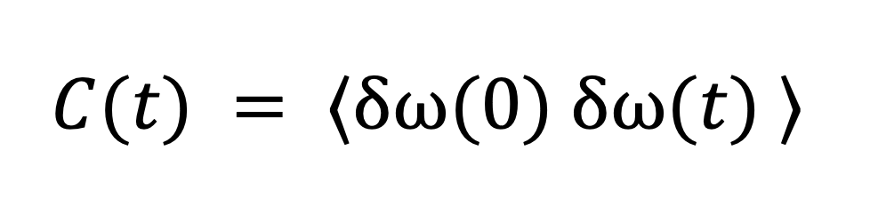
其中反映振动频率偏移随时间的自相关性。FFCF通常被拟合为指数衰减形式，以描述分子在环境中的波动：
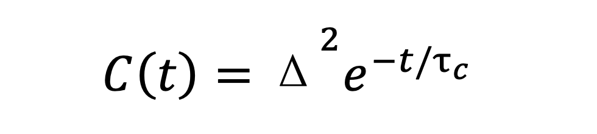
其中Δ表示分子频率的静态分布幅度（即非均匀展宽的大小）; 代表关联时间（Correlation Time），反映分子频率波动的时间尺度。在复杂体系中，FFCF可能需要使用双指数或多项拟合形式，描述多种时间尺度上的弛豫过程：
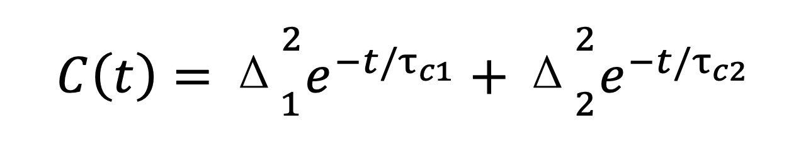
这种模型能够解析快速溶剂化过程和慢速分子构象变化等多层次的分子动力学行为。
CLS的衰减速率与FFCF紧密相关，描述了分子环境如何在时间尺度上波动。
线型分析方法：
中心线斜率（CLS, Center Line Slope）是最常用的线型分析方法之一，它通过跟踪对角峰的形状变化，直接反映光谱扩散（Spectral Diffusion）过程。CLS的时间衰减可以与FFCF直接关联，从而提取分子的去相干时间和环境波动特征。
CLS计算的具体步骤：
1.提取谱峰位置: 在每个等待时间 t2 下，沿二维红外光谱的对角线（ ）方向，测量在不同泵浦频率下，探测频率 处吸收信号最强的位置。这一位置代表分子在特定激发条件下最强的振动响应，对应于分子的共振频率。
2.绘制峰位置随泵浦频率的变化：在不同的泵浦频率下，将测得的峰位置 绘制在二维图谱上，得到峰中心频率的趋势线。
3.通过拟合峰中心位置随泵浦频率变化的趋势线，得到一个近似的线性关系曲线：
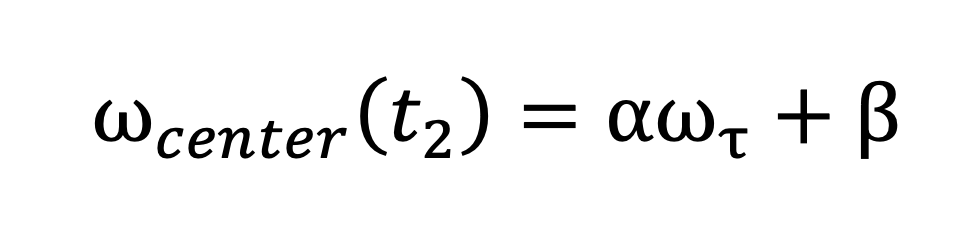
其中，斜率即为中心线斜率 (CLS)。
CLS直接反映谱峰的展宽程度以及光谱扩散的动态过程，描述了分子如何在不同环境中经历频率波动。在短等待时间时，CLS = 1，谱峰完全受非均匀展宽（Inhomogeneous Broadening）主导，对角线方向明显拉伸。此时分子频率分布广泛，反映了环境的静态异质性。在长等待时间后，谱峰趋于圆形，CLS值逐渐减小，说明峰形完全受均匀展宽（Homogeneous Broadening）主导。此时分子环境波动快速，分子振动频率平均化，失去与初始状态的相关性。
CLS随的衰减可表示为指数形式：
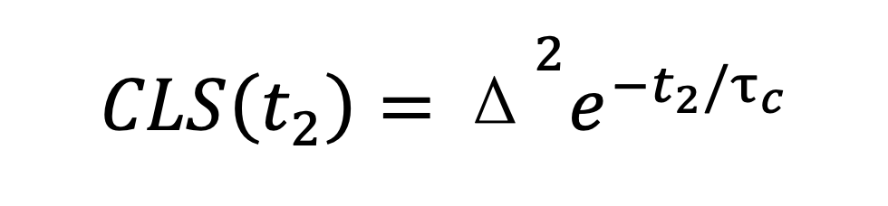
·其中是环境波动的关联时间，表示分子所在微观环境的动态特性。
·快速衰减的CLS：说明分子环境波动迅速，频率去相干过程较快，常见于动态溶剂化环境或快速氢键交换体系。
·缓慢衰减的CLS：表明分子频率随时间保持较强的相关性，环境波动较慢或存在长寿命的静态异质性，常出现在复杂或稳定的分子网络中。
5.实验细节与光路设计
2DIR实验的核心在于精确控制超快激光脉冲与样品的相互作用，从而获取分子振动的非线性响应信号。常用的实现路径有两种：四波混频（Four-Wave Mixing，FWM）和泵浦-探测（Pump-Probe），它们都基于三阶非线性光学效应，但在光路设计和信号检测方式上有所不同。
四波混频模式使用三束激光脉冲在样品中相互作用，产生一个新的相干信号脉冲。由于该信号的传播方向与入射光不同，可通过空间滤波与背景光分离，噪声极低。但这种方法对光路的空间与时间重叠要求极高，系统调试复杂，因此多用于对信号纯度要求特别高的研究。
泵浦-探测模式则采用更简化的设计，也是当前2DIR实验的主流方案。该方法中，两个时间间隔可控的泵浦脉冲先激发样品，随后探测脉冲在不同时间延迟下测量样品的瞬态吸收变化。现代系统通常利用脉冲整形器产生泵浦脉冲对，并精确调节其时间间隔（t1）和相位，以选择性激发目标振动模式。相比四波混频，泵浦-探测模式信号强度更高、重复性更好，尤其适合研究飞秒至皮秒时间尺度上的快速分子动力学过程，例如氢键的断裂与重组。
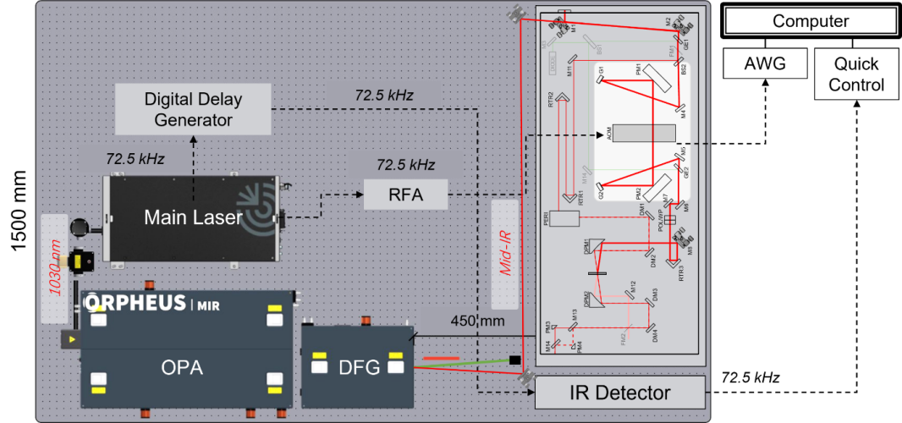
图5-1 2DIR实验装置与关键组件
一套完整的2DIR实验系统通常由光源模块、波长转换模块、脉冲调控模块、样品池与探测模块组成，各部分需满足严格的时序与空间对准要求：
光源模块：超短脉冲激光器是实验的基础，其脉冲宽度与稳定性决定时间分辨率，在超快光源的基本参数中，单脉冲能量主要决定了非线性信号的强度和样品是否会受到损伤，重复频率影响信噪比累积速度、样品加热以及探测器匹配，而平均光功率则直接关系到信号强度和样品热负荷。常见的基本参数还包括中心波长、谱带宽、脉冲时长、峰值功率、能量稳定性、时序抖动、光斑质量和偏振状态等。在实验中需通过功率计、能量计、光谱仪和脉冲表征手段（如自动相关、FROG）进行测量与确认，以确保既能获得足够的非线性信号，又避免对样品和光学元件造成损伤。
■ Yb: KGW激光器（1030 nm, 100 kHz）：功率稳定，重频高，单脉冲能量较低，适合生物样品体系的长时间动力学实验，本实验室考虑高重复频率、平均功率大，单脉冲能量较低、更安全，运行稳定性好、维护成本低等因素，采用此种光源。
■Ti: Sapphire激光器（800 nm, 1 kHz）：脉冲更短（<50fs）、单脉冲能量更高，适用于激发弱吸收模式（如C–H伸缩）。
波长转换模块：激光输出的近红外光需通过光学参量放大器（OPA）和差频产生（DFG）转化为中红外。
■OPA利用非线性晶体（如BBO）将800 nm激光扩展至400–2500 nm。
■DFG在AgGaS2等晶体中将两束近红外光混频，得到覆盖2500–12000 nm（4000–830 cm⁻¹）的中红外脉冲，匹配分子振动特征区。
脉冲调控模块：包括分束器、脉冲整形器和机械延迟线。
■分束器将红外光分为泵浦和探测。
■脉冲整形器生成两束相干泵浦脉冲并调控其间隔t1。
■高精度机械延迟线（±0.1 μm）调节探测脉冲延迟t2，覆盖飞秒至微秒尺度。
●脉冲整形器
现代2DIR实验的核心，传统机械延迟线通过移动反射镜调节光程差，但受机械振动限制，时间精度难以突破百飞秒。脉冲整形器采用声光调制器（AOM）或液晶空间光调制器（LC-SLM），直接调控脉冲的频谱成分。AOM可将入射光分割为两个时间间隔精确到±10飞秒的泵浦脉冲对，实现全电调控，避免机械抖动并支持实时序列调整，大幅提高实验稳定性与效率。
●红外检测器
碲镉汞（HgCdTe,MCT）探测器因其在2–20 μm波段的高量子效率（>70%）和超快响应速度（<1 ns）成为2DIR实验的标准配置。
◆单点MCT需结合单色仪进行频率扫描，适用于高分辨率光谱。
◆阵列MCT（如64×64或128×128像素）可一次采集全二维光谱，大幅缩短采集时间，尤其适合动力学研究。
◆部分实验采用“上转换技术”，将红外信号混频转换为可见光后用CCD探测，可降低暗电流噪声，但会牺牲部分时间分辨率。
●样品池与环境控制
窗口材料需在中红外透明：常用CaF2、KBr、ZnSe。液体样品厚度一般为10–50 μm以避免饱和吸收。环境控制模块可调节温度（±0.1℃）、压力（0–10 MPa）和湿度，用于研究条件变化下的分子相互作用，如蛋白质构象变化。
●探测模块
由聚焦透镜、滤光片和MCT检测器组成。信号经滤波后送入检测器，再通过锁相放大器和计算机采集，最终得到二维红外光谱。
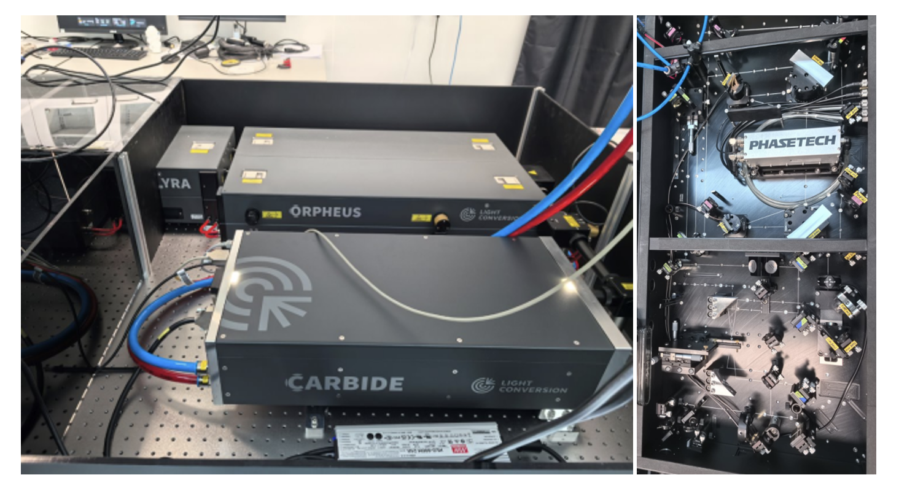
图5-2 我们实验室中红外光发生器和二维红外仪器的照片实景
尽管二维红外光谱的实验系统更为复杂，需要精密控制激光脉冲的时间、相位和强度，但它在分子结构解析与动力学研究中展现出的独特价值，使其超越了传统方法的局限。无论是探索复杂液体中的分子间相互作用、解析蛋白质的动态折叠路径，还是研究催化反应中的关键中间体，2DIR都已成为不可或缺的重要工具，在化学、生物学、材料科学等领域持续展现出广阔的应用前景与深远的研究价值。
参考文献
[1] Zheng, J.; Kwak, K.; Fayer, M. D. Acc. of Chem. Res. 2007, 40, 75.
[2] Zheng, J.; Kwak, K.; Asbury, J. B.; Chen, X.; Piletic, I.; Fayer, M. D. Science 2005, 309, 1338.
[3] You, X.*, Shirley, JC., Lee, E., Baiz, CR.“Short- and Long-range Crowding Effects on Water’s Hydrogen Bond Networks”. Cell Rep. Physical Science., 2021, 2(5):100419.
[4] Hamm P, Zanni M. Concepts and methods of 2D infrared spectroscopy[M]. Cambridge University Press, 2011.